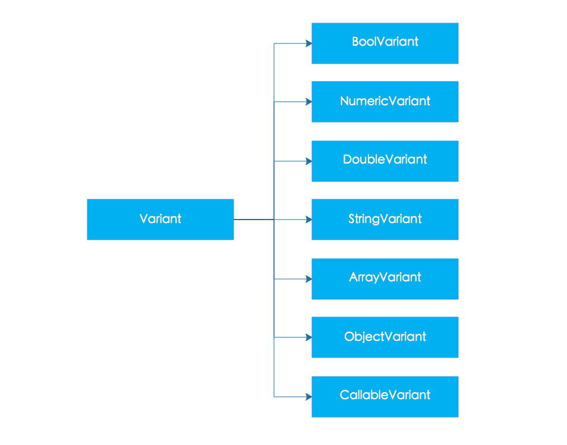

PHP虽然是弱类型的语言，但是底层的变量还是有类型的，在Zend Engine引擎中常用的类型大概有如下的几种：
IS_UNDEFIS_NULLIS_FALSEIS_TRUEIS_LONGIS_DOUBLEIS_STRINGIS_ARRAYIS_OBJECTIS_CONSTANT在Zend Engine对所有的类型都是用同一个结构体进行表示的，这个结构体就是大名鼎鼎的_zval_struct，以下就是他的定义代码：(PHP 7.1.5)
struct _zval_struct {
zend_value value;
union {
struct {
ZEND_ENDIAN_LOHI_4(
zend_uchar type,
zend_uchar type_flags,
zend_uchar const_flags,
zend_uchar reserved)
} v;
uint32_t type_info;
} u1;
union {
uint32_t next;
uint32_t cache_slot;
uint32_t lineno;
uint32_t num_args;
uint32_t fe_pos;
uint32_t fe_iter_idx;
uint32_t access_flags;
uint32_t property_guard;
uint32_t extra;
} u2;
};
这个结构体最重要的两个字段value和u1, value保存变量的值, u1这个联合体保存了变量的类型数据。
下面我们分析下 zend_value联合：
typedef union _zend_value {
zend_long lval;
double dval;
zend_refcounted *counted;
zend_string *str;
zend_array *arr;
zend_object *obj;
zend_resource *res;
zend_reference *ref;
zend_ast_ref *ast;
zval *zv;
void *ptr;
zend_class_entry *ce;
zend_function *func;
struct {
uint32_t w1;
uint32_t w2;
} ww;
} zend_value;
一目了然，PHP支持的所有类型都是由它表示，当我们在PHP中定义变量时候，底层都会生成相应的结构体，很简单吧。我们上大学的时候在计算机课程中都知道，程序是数据结构和定义在数据结构上的操作组成。Zend Engine中针对各种支持的类型定义了很多操作宏, 比如就有如下的宏定义：
Z_TYPE(zval); 获取变量类型ZVAL_NEW_STR(z, s); 生成一个全新的字符串ZVAL_LONG(z, l); 将整型数据存入变量Z_STRLEN(zval); 获取保存在变量中的字符串的长度信息PHP源码树中的Zend/zend_types.h文件中定义了非常的操作变量的宏，大家有兴趣可以自己去研究。
其实说道这里，其实问题就出来了，比如:
为了解决以上的问题，zendAPI将Zend Engine底层的操作数据类型的接口进行抽象，对常见的几种数据类型进行封装，为扩展开发者提供了一套面向对象的数据类型。

通用类型容器类，这个类就像他的名字一样，提供了所有Zend Engine支持的类型的构造函数，是具体类型的基类，负责在zendAPI和Zend Engine之间进行数据传递。这个类不提供具体跟类型相关的方法，如果需要操作特定类型的变量，请使用下面的特定类型的封装类。
这个类提供了一些实用的功能，比如获取变量的类型，判断两个变量是否相等已经向一些常见类型的类型转换方法等等。
这个类型主要在zapi::ds::Variant的基础上提供了布尔数据类型相关的操作方法，最重要的就是两个类型转换方法：
virtual bool toBool() const ZAPI_DECL_NOEXCEPT override;
operator bool () const override;
这样zapi::ds::BoolVariant就能跟普通的C++布尔类型一样用在if，while等等条件判断上下文中了。
这个类型主要在zapi::ds::Variant的基础之上提供了数值类型的操作方法比如四则运算，比较大小以及自增和自减运算等等，基本能达到类似C++原生整型的水平。
zapi::ds::NumericVariant 详细使用文档
zapi::ds::NumericVariant 参考手册
这个类型主要在zapi::ds::Variant的基础之上提供了浮点类型的操作方法比如四则运算，比较大小以及与整型混合计算的类型提升模拟等等，基本能达到类似C++原生浮点类型的水平。
这个类型主要在zapi::ds::Variant的基础之上提供了字符串相关的操作方法，我们实现字符串接口的时候参考了std::string接口和Qt里面的QString的接口，提供了如下常见的接口方法：
通过提供的这些功能接口，简化了开发扩展的时候对于字符串操作的难度。我们在这里只是概要的说明一下，具体的详细使用教程，大家可以参考下面两个链接:
这个类型主要在zapi::ds::Variant的基础之上提供了数组操作的相关方法，虽然我们在PHP代码中使用我们的数组那是一个爽字了得，基本绝大部分程序没有数组是万万不行的。但是，您如果写扩展的话，在C/C++语言环境中对数组进行操作，特别是数字索引和字符串索引相互嵌套的时候，那是相当酸爽，你懂得。
为了克服以上的痛点，我们在实现数组接口的时候尽量在C++类型系统的限制内模拟PHP中数组的操作方法，同时在设计接口的时候借鉴了std::map和QHash等等程序类的接口。我们大致提供了一下的常用接口方法：
Zend Engine支持的数据类型C++方式的迭代器支持我们在这里只是简单的介绍了一下zapi::ds::ArrayVariant的特性，是不是感觉很爽，想知道详细的使用文档的话，请您点击查看下面的链接:
这里类型主要在zapi::ds::Variant的基础之上提供了描述PHP中对象的相关接口，为什么需要这个类呢？因为有的时候我们需要在C++空间实例化一个自定义的原始类，这个时候我们这个类就派上用场了，方便我们在参数中传递对象。
提供的常见接口有：
具体的用法请大家点击下面的链接详细了解：
这个类型主要在zapi::ds::Variant的基础上提供了描述可调用实体的相关接口，当我们的原生定义的函数或者方法的参数有闭包或者函数的时候，我们必须借助这个类型进行传递。
主要就是提供了函数调用运算符重载：
Variant operator ()() const;
template <typename ...Args>
Variant operator ()(Args&&... args);
具体的使用范例，请参考下面的两个链接：
zapi::ds::CallableVariant 详细使用文档
zapi::ds::CallableVariant 参考手册
写在最后的话，关于PHP变量大家可以阅读以下两篇文章，写的非常不错：
Internal value representation in PHP 7 - Part 1
Internal value representation in PHP 7 - Part 2